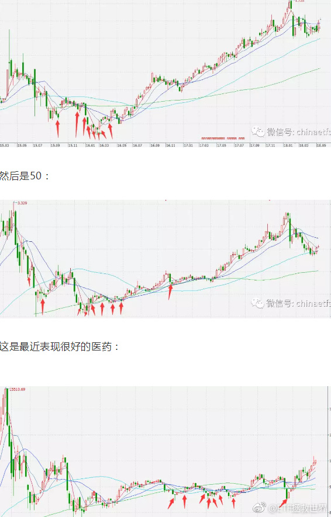

回复@梦之彼方2082:上次在目前估值是2013年12月，这5.5年涨了61%。这应该就是你说的“正常收益”。碰到牛市的话，是2年后涨了205%。这就是你说的“意外之财”@ETF拯救世界:医药20+了。未来A股所有品种都会有20+，而且只是起步。投资应该是很快乐的一件事。
回复@橄榄树_枝:不知道，看命。因为我不知道下轮牛市什么时候来，最终幅度有多少，我们能坚持到哪里。我只能尽量把自己的成本压到力所能及的最低，无论未来发生什么都掌握主动权。//@橄榄树_枝:老大，未来牛市高位卖出后，本轮计划年化大概能到多少？@ETF拯救世界:医药20+了。未来A股所有品种都会有20+，而且只是起步。投资应该是很快乐的一件事。
刚才我看这几张图，你有没有发现特别像非洲草原上的鬣狗。一群小鬣狗在猎物体力不支的时候一起冲上去大吃一顿……对方有力气的时候，只是找机会咬一口就跑，然后很长时间不动，静静等机会。机会来了就一顿咬。感受一下。小红剪头。 
回复@奇葩一朵一朵:这个结论现在不够稳。如果跌到我希望的4500-5000，这个实现的概率就非常非常大。而且不需要五年。//@奇葩一朵一朵:e大，现在买中证500，五年后是不是大概率15%的年化@ETF拯救世界@ETF拯救世界:医药20+了。未来A股所有品种都会有20+，而且只是起步。投资应该是很快乐的一件事。